Conecta de verdade
Porta serial USB ou Wi-Fi/TCP com ESP8266/ESP32. O app lê o firmware, o curso e os limites da máquina e usa isso no pré-voo.
- 30+ perfis prontos
- Detecção de desconexão
- Reconexão opcional
Linux nativo · GRBL 1.1 · Código aberto
GRBL Studio é a alternativa nativa ao LaserGRBL: envio de G-code à prova de buffer, editor vetorial, imagem, QR/código de barras e produção em série. Tudo em um app leve, bonito e sem Wine.
Sem conta. Sem nuvem. Sem assinatura. Seus arquivos ficam na sua máquina.
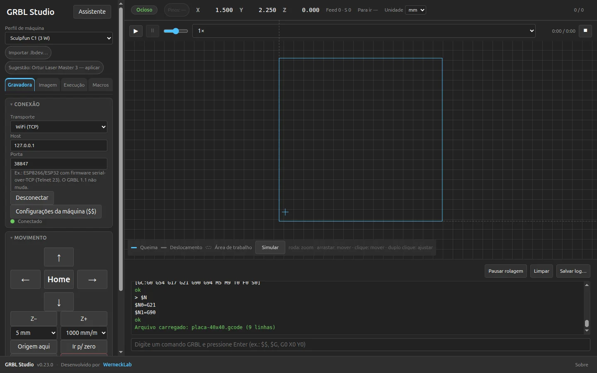
Perfis prontos para 30+ modelos. Marcas citadas apenas para indicar compatibilidade. Ver detalhes.
Feito para Linux
O LaserGRBL é uma referência no Windows, mas no Linux depende de camadas de compatibilidade. O GRBL Studio nasceu nativo: instala, abre e conversa com a sua máquina sem mapear portas COM nem brigar com o sistema.
Porta serial USB ou Wi-Fi/TCP com ESP8266/ESP32. O app lê o firmware, o curso e os limites da máquina e usa isso no pré-voo.
A janela de envio conta caracteres, respeita o planner e só libera espaço a cada
ok. Nada de despejar G-code no buffer e torcer.
Imagem, vetor, símbolos, materiais, fila e produção no mesmo lugar. Você não precisa exportar para outro programa só para preparar a peça.
Wine + Mono + mapeamento de portas COM. Funciona, mas não é nativo.
AppImage + /dev/ttyUSB0 + tema nativo. Abriu, conectou, gravou.
Recursos
Do primeiro G-code à produção em série: conexão, preparação, simulação e gravação conversam entre si. Sem assinatura, sem exportar para cinco programas.
A janela de envio conta caracteres, respeita o planner e só libera espaço a cada
ok. Pausa, retomada e emergência ficam sempre a um clique — mesmo com
o PC ocupado.
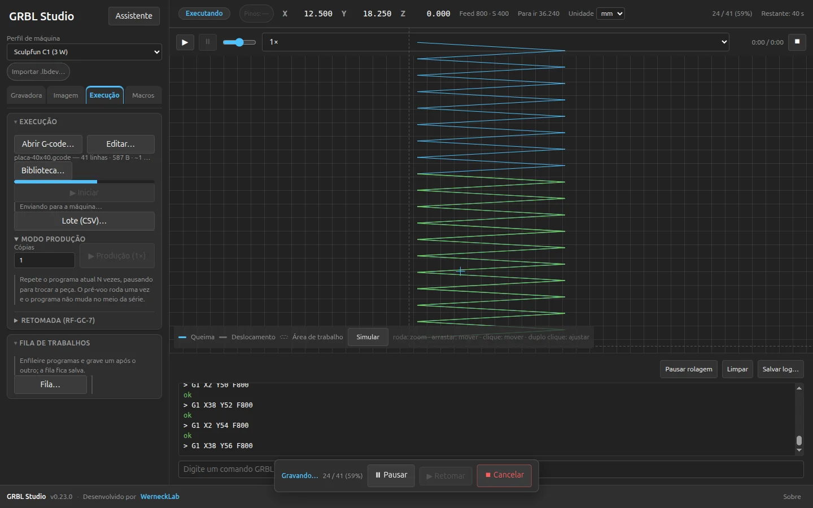
Prancheta em milímetros, texto vetorial, booleanas, contorno paralelo, camadas, kerf, nesting e SVG/DXF/PDF. O G-code sai ancorado em X0 Y0.
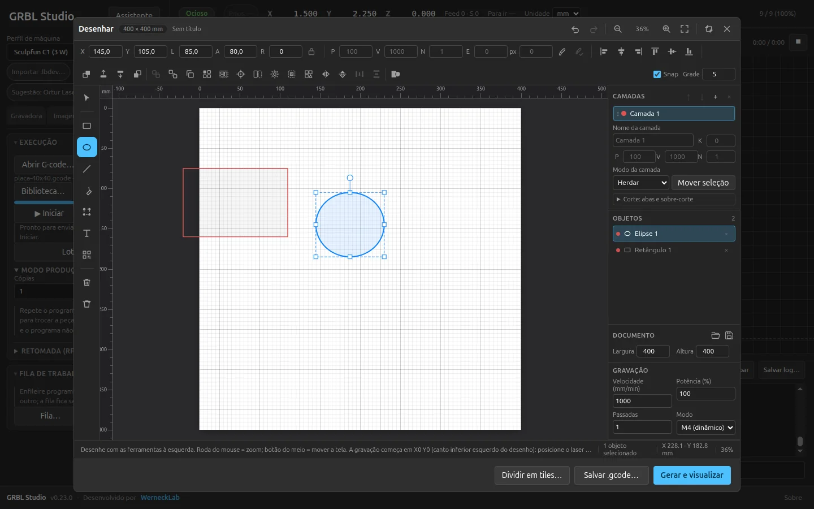
Line-to-line, dithering, centerline e vetorização. Ajustes de brilho, contraste, inversão e velocidade adaptativa para a sua máquina.
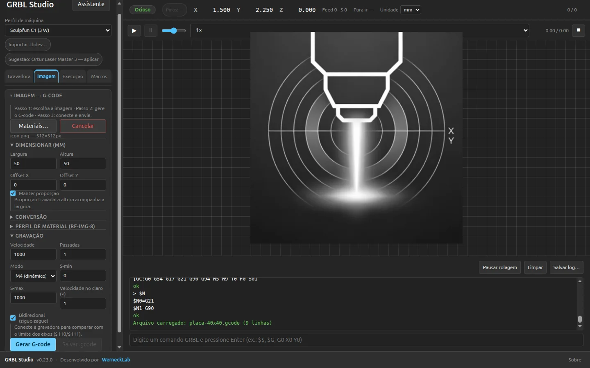
Gere símbolos no próprio app, com tamanho em mm, quiet zone, HRI e lote CSV. QR, Data Matrix, PDF417, Aztec e nove simbologias 1D — prontos para gravar.
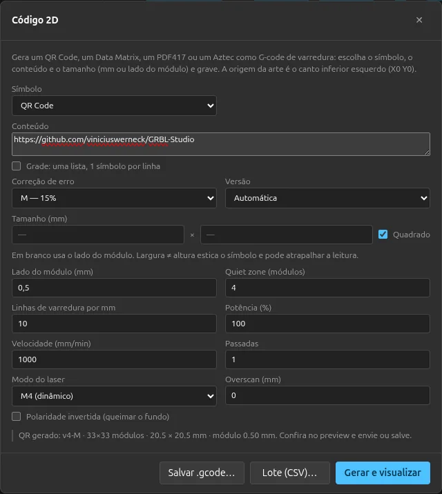
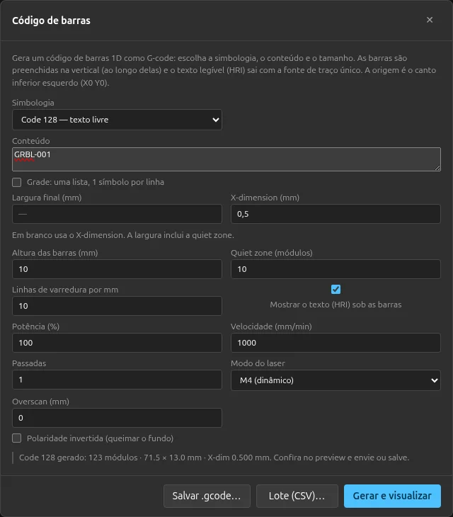
Fila persistente, modo produção N×, pausa para trocar a peça, contador e retomada. O pré-voo roda uma vez por série e o Stop continua à mão.
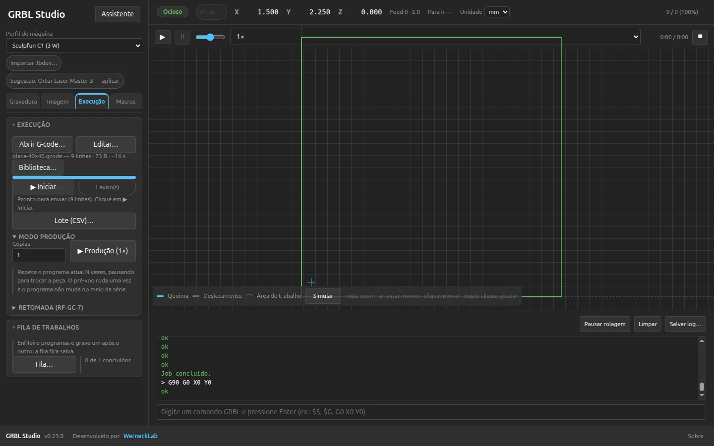
26 fichas com recomendação e aviso de segurança, presets com dose J/mm, grade de material e teste de foco. Material perigoso fica bloqueado.
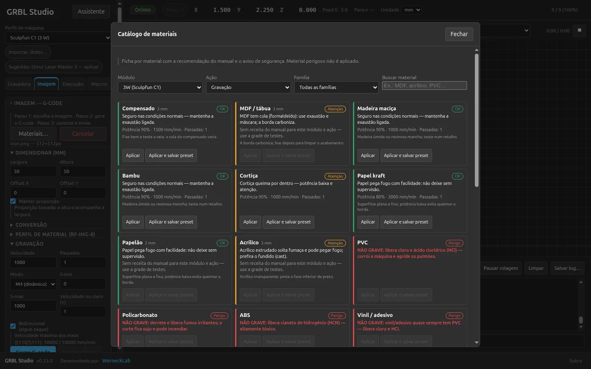
Playback 2D, tempo estimado, intensidade S, trecho por passada e a cabeça andando no caminho. Dá até para mover a cabeça clicando no preview.
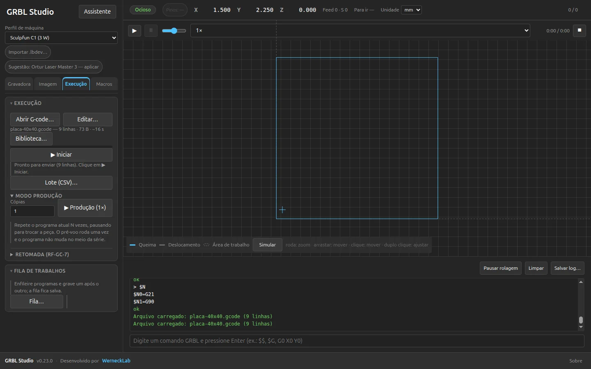
11 temas claros, escuros e de alto contraste; interface em português, inglês e espanhol; modo básico com tour e atalhos para quem quer velocidade.
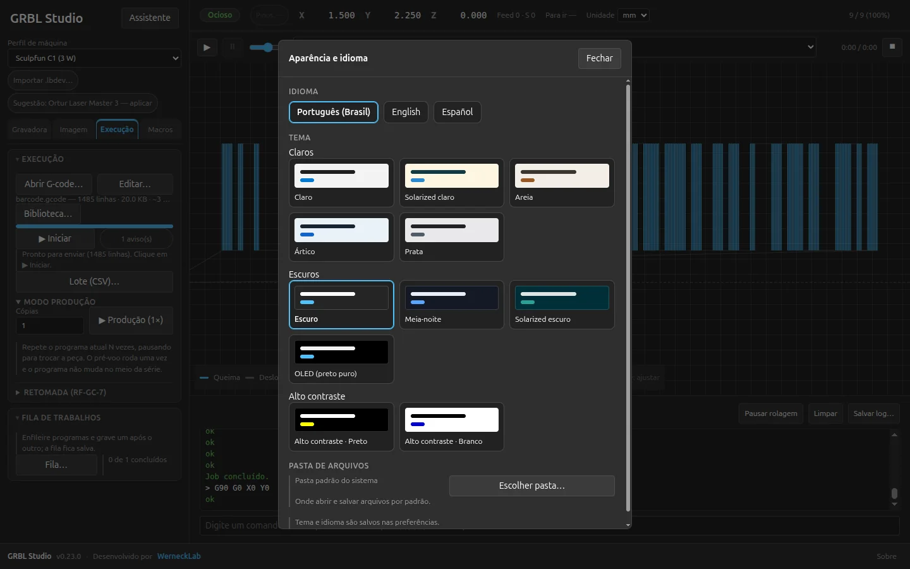
Como funciona
A curva de aprendizado é curta de propósito. O tour de boas-vindas mostra o caminho, o modo básico esconde o que não é essencial e o modo avançado está lá quando você precisar.
Escolha a porta, o baud e o perfil da máquina. O GRBL Studio lê o firmware, o curso e os limites — e já sugere o que combina com o seu hardware.
Abra um G-code, importe uma imagem, desenhe no editor ou gere um símbolo. Ajuste potência, velocidade, passadas e camadas no mesmo fluxo.
Confira o preview e o pré-voo, posicione a peça e dê Play. A barra do job mantém pausa, overrides e emergência sempre visíveis.
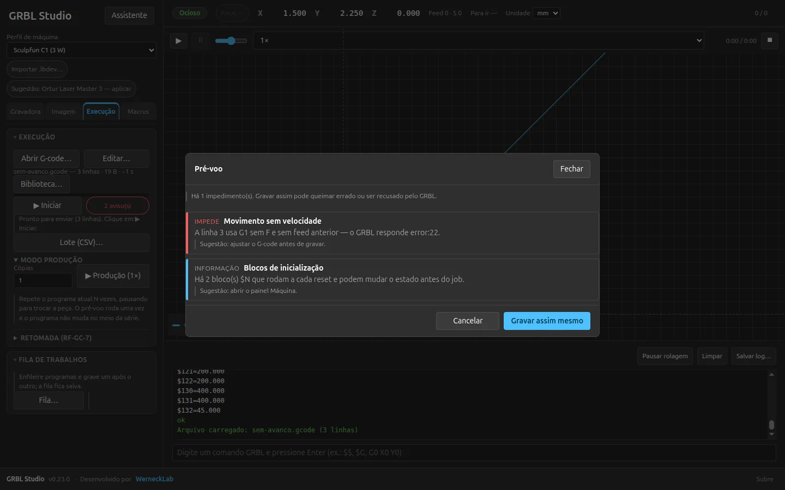
Antes de queimar
Limites da área de trabalho, linhas perigosas, M3/M4 sem S, coordenadas fora do curso e velocidade acima do que a máquina permite. Melhor descobrir agora do que no material.
Comparativo honesto
O GRBL Studio não tenta ser o LightBurn em tudo. Ele foca no que um laser diodo GRBL precisa: um fluxo nativo, confiável e bonito no Linux — com as ferramentas de preparação que normalmente ficam espalhadas em outros programas.
| Critério | GRBL Studio | LaserGRBL | LightBurn |
|---|---|---|---|
| Preço e licença | Grátis · MIT | Grátis · GPLv3 | US$ 99–199 |
| Linux | Nativo | Via Wine/Mono | Nativo |
| Código aberto | Sim | Sim | Não |
| Editor vetorial | Integrado | — | Integrado |
| QR / Data Matrix / PDF417 / 1D | Sim, no app | — | Ferramenta de código |
| Fila + produção em série | Sim | — | Parcial |
| Câmera / rotativa | Roadmap | — | Sim |
| Perfis de máquina | 30+ | Genérico | Centenas |
| Temas / idiomas | 11 / 3 | Básico / vários | Vários / vários |
Dados de outubro de 2026, baseados em documentação pública e no código do projeto. Preços e recursos mudam; confira as fontes e ressalvas no comparativo completo.
Para quem é
Se você tem uma laser GRBL e quer menos atrito entre a ideia e a peça pronta, o GRBL Studio foi desenhado para a sua bancada.
Primeira máquina, primeiro projeto. O tour de cinco passos e o modo básico colocam você para gravar sem decorar G-code.
“Quero ligar, escolher a imagem e ver acontecer.”
Controle fino de verdade: overrides, configurações $$, macros, camadas,
kerf, nesting e preview com intensidade.
“Quero entender e ajustar cada parâmetro.”
Fila, produção N×, presets de material, custo por peça e retomada. Menos cliques repetidos, mais peças iguais.
“Preciso repetir o mesmo resultado amanhã.”
AppImage, .deb, sem Wine/Mono, código aberto e 11 temas. Instalação limpa, sem camadas de compatibilidade.
“Se não roda nativo, não me serve.”
Download
Baixe a versão mais recente, conecte a máquina e comece pelo tour de boas-vindas. Sem conta, sem cartão e sem telemetria.
Baixe o arquivo, torne executável e rode. Não precisa instalar.
chmod +x GRBL-Studio-*.AppImage
./GRBL-Studio-*.AppImage
Instala o app no menu do sistema. Se o apt pedir dependências, rode sudo apt -f install.
sudo apt install ./grbl-studio_*_amd64.deb
O código é aberto. Clone, instale as dependências e rode em modo de desenvolvimento.
git clone https://github.com/viniciuswerneck/GRBL-Studio.git
cd GRBL-Studio
npm install && npm run build && npm start
Documentação
Guia de primeiros passos, manual completo com prints, comparativo técnico e changelog. Tudo em português — e o manual também em inglês e espanhol.
Instalação, permissão da porta serial, conexão e o primeiro job em 11 seções.
Ler o guiaDo básico ao avançado, com 38 prints e versão HTML navegável com busca.
Abrir o manualGRBL Studio, LaserGRBL, LightBurn, Rayforge e mais — com fontes e ressalvas.
Ver comparativoO que entrou na v0.23.0 e em cada versão anterior, sem letra miúda.
Ver mudançasPerguntas frequentes
As respostas diretas para as dúvidas mais comuns. Se a sua não estiver aqui, abra uma issue no GitHub.
Sim. O GRBL Studio é open source sob licença MIT, sem assinatura, conta ou nuvem. Você baixa, usa e, se quiser, contribui com o projeto.
Se a máquina fala GRBL 1.1 ou 0.9, sim. Há conexão USB serial e Wi-Fi/TCP para ESP8266/ESP32, além de 30+ perfis prontos e um perfil Genérico GRBL.
Não. O GRBL Studio é um aplicativo desktop nativo para Linux, distribuído como AppImage e .deb. O Flatpak está em preparação.
G-code (.gcode, .nc, .tap, .txt), imagens PNG, JPG, BMP, GIF, WebP e AVIF, SVG, DXF ASCII e PDF vetorial. Também é possível desenhar no editor interno.
Para laser diodo GRBL, o GRBL Studio cobre o fluxo principal: conexão, preview, imagem, vetor, camadas, materiais e produção. Não temos câmera, rotativa ou controladores CO2/Ruida; se você precisa disso, o LightBurn ainda é a escolha.
Baixe o AppImage e execute, ou instale o .deb. Para acessar a porta serial, adicione seu usuário ao grupo dialout e faça logout/login.
Sim. O manual completo está em português, inglês e espanhol, com prints localizados e versão HTML navegável.
No GitHub Issues do projeto. O código é aberto e contribuições são bem-vindas.
Comece agora
Um app, uma máquina e a próxima ideia. O GRBL Studio cuida do protocolo para você cuidar do material.
Linux x86_64 · v0.23.0 · MIT · Sem conta